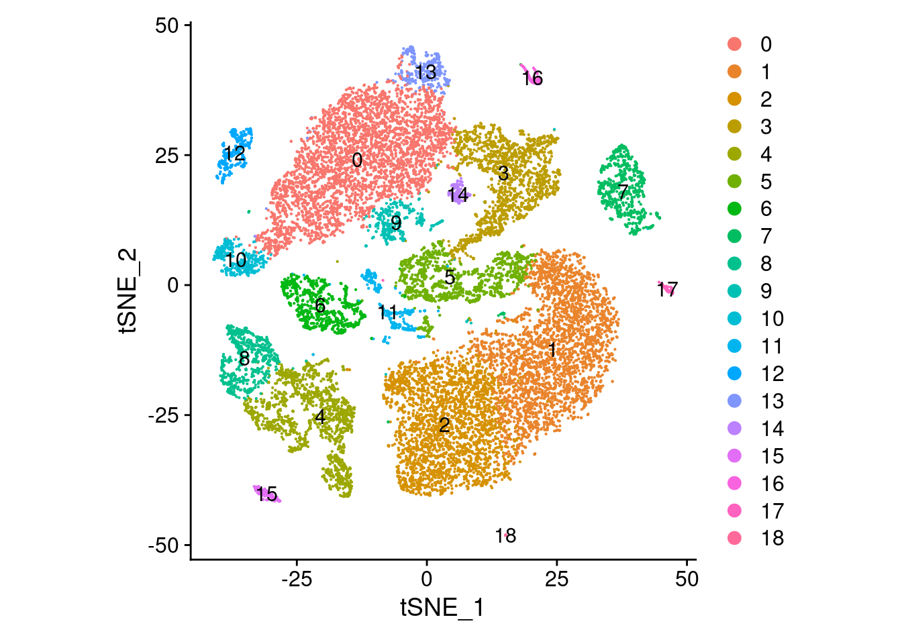

suppressPackageStartupMessages({
library( tidyverse )
library( Seurat ) })
ReadMtx( "~/Downloads/ifnagrko/ifnagrko_raw_counts.mtx.gz",
"~/Downloads/ifnagrko/ifnagrko_obs.csv",
"~/Downloads/ifnagrko/ifnagrko_var.csv",
cell.sep=",", feature.sep=",", skip.cell=1, skip.feature=1,
mtx.transpose=TRUE) -> count_matrixComparing UMAP and t-SNE
Here, we compare the two dimension reduction methods, t-SNE and UMAP, applied to our usual “IFAGRKO” example data.
Load the data
RUn the standard Seurat pipeline. Note the we added one step, namely RunTSNE in addition to RunUMAP:
count_matrix %>%
CreateSeuratObject() %>%
NormalizeData() %>%
FindVariableFeatures() %>%
ScaleData() %>%
RunPCA( npcs=20 ) %>%
FindNeighbors( dims=1:20 ) %>%
FindClusters( resolution=0.5 ) %>%
RunTSNE( dims=1:20 ) %>%
RunUMAP( dims=1:20 ) -> seuWarning: Feature names cannot have underscores ('_'), replacing with dashes
('-')Normalizing layer: countsFinding variable features for layer countsCentering and scaling data matrixPC_ 1
Positive: Apoe, Aldoc, Sparcl1, Sdc4, Ptn, Cmtm5, Glul, Gpr37l1, Fxyd1, Atp1b2
S100a1, Slc4a4, Slc1a3, Prxl2a, F3, Itm2b, Mt1, Rgcc, Prdx6, Sfxn5
Sat1, Scrg1, Dbi, Hes5, Luzp2, Plaat3, Pla2g7, Sash1, Plpp3, Sparc
Negative: Tubb5, Sox11, Tubb3, Stmn1, Jpt1, Hmgb3, Ptma, Sox4, Dlx2, Cd24a
Igfbpl1, Dlx6os1, Map1b, Stmn2, Abracl, Tmsb4x, Lmnb1, Cdca7, Ccnd2, Elavl4
Cdk4, Dcx, Arx, Uchl1, EYFP, Celf4, Dlx5, Nrxn3, H1fx, Hmgn2
PC_ 2
Positive: Ctss, C1qc, Laptm5, Csf1r, Trem2, C1qa, Cx3cr1, C1qb, Tyrobp, Ly86
Fcer1g, Siglech, Selplg, Fcrls, Tmem119, Fcgr3, Apbb1ip, Unc93b1, Cd53, Lpcat2
Spi1, Pld4, Olfml3, Irf8, Ctsh, Aif1, Cd300c2, Fyb, Otulinl, Mylip
Negative: Rorb, Cldn10, Clu, Mt3, Ntsr2, Mfge8, S1pr1, Id4, Slc1a2, Acsl6
Plpp3, Sox9, Ddah1, Bcan, Cxcl14, Btbd17, Mlc1, Cspg5, Fjx1, Aqp4
Ntm, Acsl3, Gabrb1, Tspan7, Lsamp, Chst2, Mt2, Lhx2, Slc39a12, Glud1
PC_ 3
Positive: Atp1a3, Camk2b, Snhg11, Syt1, Nrip3, Kcnj4, Scg2, Snap25, Dnm1, Pcp4
Icam5, Ndrg4, Eef1a2, Eno2, Ano3, Ryr2, Arpp21, Ptk2b, Gng4, Kcna4
Penk, Slc4a10, Snca, Gad1, Rprml, Grin2a, C1qtnf4, Shisa8, Camk2a, Kcnb2
Negative: Hmgb2, Top2a, Pbk, Birc5, Mki67, Cdk1, Cdca8, Spc24, Cenpf, Spc25
Prc1, Rrm2, Mdk, Nusap1, Tpx2, Cdca3, Knl1, Ckap2l, Esco2, Aurkb
Cenpm, Ccna2, Bub1, Cks2, Kif11, Hist1h3c, Hist1h1b, Hmmr, Pclaf, Fbxo5
PC_ 4
Positive: C1qc, C1qa, Ctss, Trem2, Csf1r, C1qb, Cx3cr1, Laptm5, Fcer1g, Tyrobp
Ly86, Siglech, Selplg, Fcrls, Fcgr3, Hexb, Spi1, Cd53, Itgb5, Pld4
Ptgs1, Cd300c2, Aif1, Irf8, Fyb, Itgam, Cyth4, Ltc4s, Otulinl, Cd37
Negative: Frzb, Apod, Npy, Plp1, Vtn, Foxd3, Wnt6, Nr2f2, Edil3, Sox10
Gsn, Matn4, Fbln2, Aspa, Aqp1, Igf1, Plat, Lpar1, Igfbp4, Erbb3
Fabp7, Plppr4, Ptgds, Col23a1, Alx3, Hey2, Cd59a, Fam3c, Scd1, Mybpc1
PC_ 5
Positive: Stmn2, Igfbpl1, Cd24a, Nrep, Sox4, Map1b, Stmn4, Tubb3, Shtn1, Dlx6os1
Dcx, Ly6h, Sox11, Jpt1, Mpped2, Stmn1, Plxna4, Pbx3, Elavl4, Uchl1
Runx1t1, Cald1, Foxp2, Dlx2, Gad2, Celf4, Pfn2, Dlx5, Sp8, Tubb5
Negative: Top2a, Pbk, Birc5, Mki67, Spc25, Cdk1, Prc1, Nusap1, Spc24, Esco2
Tpx2, Knl1, Aurkb, Cenpf, Cdca8, Ckap2l, Kif11, Cdca3, Hist1h3c, Hmmr
Ccna2, Bub1, Incenp, Hist1h2af, Ndc80, Cit, Fbxo5, Kif4, Sgo1, Kif22 Computing nearest neighbor graphComputing SNNModularity Optimizer version 1.3.0 by Ludo Waltman and Nees Jan van Eck
Number of nodes: 18302
Number of edges: 616069
Running Louvain algorithm...
Maximum modularity in 10 random starts: 0.9191
Number of communities: 19
Elapsed time: 4 secondsWarning: The default method for RunUMAP has changed from calling Python UMAP via reticulate to the R-native UWOT using the cosine metric
To use Python UMAP via reticulate, set umap.method to 'umap-learn' and metric to 'correlation'
This message will be shown once per session18:33:27 UMAP embedding parameters a = 0.9922 b = 1.11218:33:27 Read 18302 rows and found 20 numeric columns18:33:27 Using Annoy for neighbor search, n_neighbors = 3018:33:27 Building Annoy index with metric = cosine, n_trees = 500% 10 20 30 40 50 60 70 80 90 100%[----|----|----|----|----|----|----|----|----|----|**************************************************|
18:33:30 Writing NN index file to temp file /tmp/RtmpKLcN6i/file146cb730a4545
18:33:30 Searching Annoy index using 1 thread, search_k = 3000
18:33:41 Annoy recall = 100%
18:33:42 Commencing smooth kNN distance calibration using 1 thread with target n_neighbors = 30
18:33:43 Initializing from normalized Laplacian + noise (using RSpectra)
18:33:48 Commencing optimization for 200 epochs, with 776086 positive edges
18:34:00 Optimization finishedHere is the UMAP plot, that we’ve seen before:
UMAPPlot( seu, label=TRUE ) + coord_equal()
Here is the t-SNE reduction for the same data
TSNEPlot( seu, label=TRUE ) + coord_equal()
To compare the two interactively with Sleepwalk, run the following command in an interactive R session:
sleepwalk::sleepwalk(
list( Embeddings(seu,"tsne"), Embeddings(seu,"umap") ),
list( Embeddings(seu,"pca"), Embeddings(seu,"pca") ),
maxdists = c( 30, 30 ) )